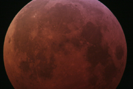
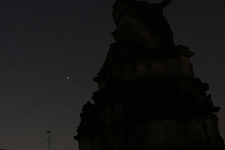
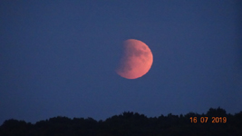

nouveautés

Photographie de l'éclipse totale de Lune du 21 janvier 2019

Rapprochement de Vénus (en haut) et Jupiter (en bas) photographié le 21 janvier 2019

Time lapse de l'éclipse partielle de Lune du 16 juillet 2019


information
L'observatoire sera ouvert au public le samedi 1er février 2020. La séance commencera à 21h 30 précises. Au
programme:
- observation du ciel d'hiver, et en particulier de la Lune à l'aide de nos instruments si la météo le permet.
Si le ciel est couvert, séance de planétarium, exposés, discussions
Entrée libre, gratuite et sans réservation dans la limite des places disponibles.